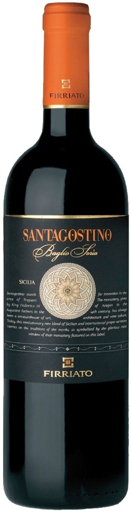

Вино Firriato

Купить
Описание товара
| Вино: |
Красное, сухое |
| Регион: |
Италия, Сицилия |
| Производитель: |
Firriato |
| Крепость: |
14% |
| Объем: |
0.75 л |
| Виноград: |
Неро д'Авола: 50%, Сира: 50% |
Характеристики товара
- Цвет
Вино имеет очень темный рубиновый цвет с насыщенными пурпурными отблесками.
- Вкус
Щедрый, интенсивный вкус вина с оттенками вишни и сливы, изобильной структурой, деликатными танинами и фруктовым послевкусием с легкими акцентами специй.
- Аромат
Соблазнительный аромат вина гармонично объединяет в себе нюансы спелых фруктов и лесных ягод, мотивы лепестков розы, тонкие обертоны мяты и штрихи черного перца.
- Гастрономические сочетания
Универсальность вина делает его идеальным компаньоном для таких блюд, как лазанья с мясным соусом, филе из телятины с грибами, тушеное мясо кабана, зайчатина, свиные ребрышки с черносливом. Отлично сочетается с выдержанными сырами.
Подробное описание товара
"Santagostino" — вино, которое является достойной главой в новейшей истории сицилийских вин, жемчужиной сицилийского виноделия и входит в элиту мировых вин. Выпущенное впервые в 1991 году, "Santagostino" сразу завоевало любовь потребителей и было по достоинству оценено на мировом рынке. Обладая приятным, питким вкусом с богатыми и сочными фруктовыми нотами, вино стало "чемпионом" в своем классе.